Audit and evidence¶
Everything on this page is read-only, except answering an exception request. The roles admin, analyst and auditor can read it, in their own workspace. What is recorded and for how long is on What the workspace records.
Events¶
Audit, tab Events, titled Recent audit events, lists what the agents scanned and did in the last 90 days. Older events are not available. The tabs of Audit are Events, Activity, Conversations and False positives.
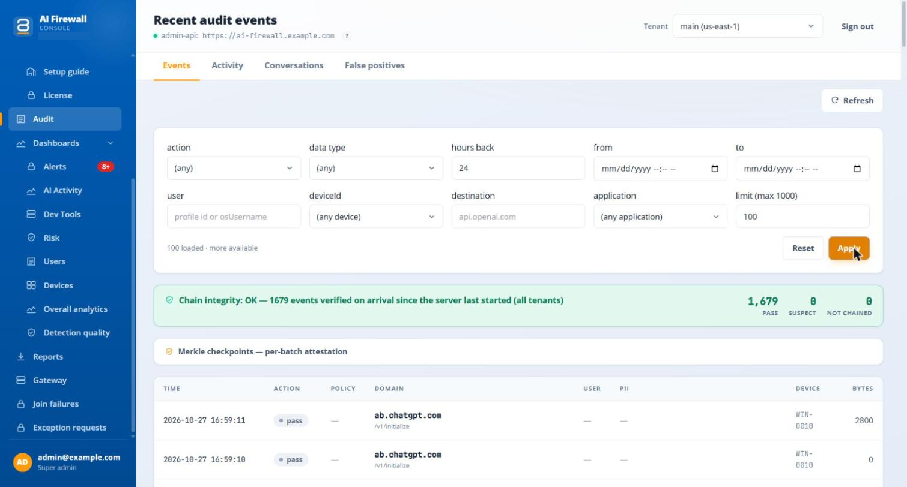
The picture shows a test workspace. Names, addresses and IDs are examples.
- Pick the workspace in Tenant, set the filters and select Apply. With several workspaces, the page waits until you do. Until then it says "Apply a filter to see recent audit events. Tenant is required." It says the same when the window has no events, so widen hours back before you decide that nothing was recorded.
- Filters. action (
pass,log,mask,reroute,block), data type, hours back (24 by default), from, to, user (exactly the stored user value), deviceId, destination (exactly the host), application, and limit (up to 1000 rows). Reset clears them. Refresh is at the top of the page and Load more is under the table. The filters you apply are kept in the address. - Columns. Time, Action, Policy (the policy, its layer and the control that decided; filled only for computers with a published policy; for a warned request it also says how the warning ended, for example "warned; no prompt shown; blocked"), Domain with the path under it, User, PII, Device (its ID, not the host name) and Bytes.
- PII lists what was found. Where a detector knows the identifier, it names it, for example "Polish PESEL"; rows from older agents show only the category. Under it, a row can say not fully inspected or not checked, with the reason: a password-protected file, a file nested too deeply, text recognition not available on the computer, an image that could not be read, a file type that is not supported, or a file too large. Such a request went out without a full check. Take it seriously: you do not know what it contained.
- Open a row that has context or images to see the captured context (the masked text around each detection, with offsets) and, for an image, only the redaction map ("Image not retained").
The list is not only detections: the agent writes a row for every request it scans, including the ones where it found nothing (pass). The tooltip that says "every detected PII event" is not accurate.
There is no export on the Events tab. Reports can export a CSV of the newest 500 events.
The integrity checks¶
Chain integrity counts the events that passed the chain check since the server last started, in all workspaces. The figures are kept in memory and start again at zero after a restart. A re-anchored segment is normal after a network gap or a restore. It is not tampering.
The section Merkle checkpoints — per-batch attestation is closed at first and loads when you open it. It lists the latest 20 batches the server attested for the workspace: range, number of events, Merkle root, source and when it was anchored.
A standard server has no trusted timestamp
On a server installed with aifw, the checkpoints are marked local marker only, which is not a trusted timestamp. A trusted timestamp needs a time-stamping service address that an administrator sets on the server. Without it, do not present the checkpoints to an auditor as one. The server makes checkpoints on its own, about every five minutes. The portal has no button to make one, so on a new server the section can say "No tamper-evidence checkpoints yet for this tenant" for a short time.
How the chain works: each computer links its events in order, and signs each batch with its own key. The server checks every link and flags a repeat, a missing event, a change or an order break as suspect. This proves that events were not changed on their way to the server. It does not protect against someone who has administrator access to the server's database. The checkpoint section also tells an auditor to verify with a tool called audit-verify. This tool is not part of what you receive, so a check you run yourself is not available.
An agent keeps events for up to 30 days when it cannot reach the server, and sends them when it can.
Activity and false positives¶
Audit > Activity (titled Audit activity) is the same feed for the last hours of one workspace, with the columns Timestamp, User, Risk, Domain, PII types and Action, and a link Investigate → when a user exists. The Risk column is always empty.
Audit > False positives (titled False-positive reports) lists detections that people marked as wrong, with the noisiest patterns first. Choose a window of 7, 30 or 90 days. The page says "Operators can flag a match from the Traffic Log in the desktop app — reports appear here once a device ships one." The tables are Top noisy patterns and Recent reports. A report sent by an older app can carry the matched text. The column Matched text then shows it, and otherwise says "value not sent by the device".
Conversations¶
Audit, tab Conversations, shows the conversations the computers had with AI services, as far as the workspace keeps them. See How much of a conversation is kept. Content stays for 30 days.
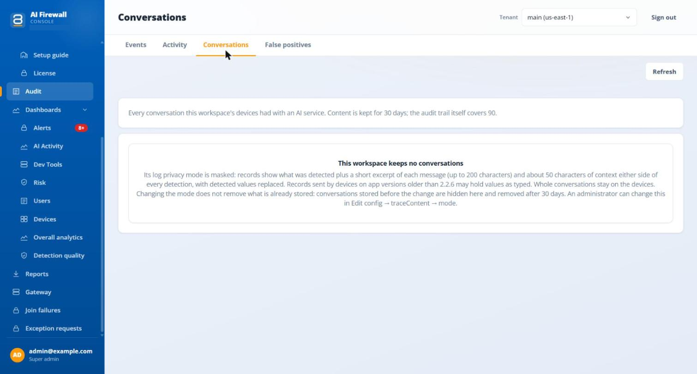
- When the Trace content setting is
maskedormetadata, the page says "This workspace keeps no conversations" and explains what is kept instead, as in the picture. Changing the mode does not remove what is already stored: older conversations are hidden and removed after 30 days. - Find. Search chats, models and devices. The search shows up to 25 of 200 matches. Filter by Masked, Blocked or Passed, by service, device and person. Group by time, device or person. The filters appear when there are conversations.
- Read. Each message has a label that says how it was recorded. The AI service's reply is not shown, because it is never sent. Attachments show by type and size only. A match on an organisation keyword is labelled Organisation keyword.
- Download. Download this exchange, or a JSON export of a conversation (the latest 60 exchanges).
- The Person filter and grouping are empty unless audit records name the person.
"No conversations yet" and "This workspace keeps no conversations" are different: the second means the setting keeps none.
Overview and dashboards¶
- Overview shows, for one workspace, four sections: Alerts, Devices, AI Activity of the last 7 days, and the Client tile. The Client tile checks update versions against the update feed of another product. On a server that hosts only this product it can be empty or say that no feed is hosted. Ignore it. Reload the page to see new figures: it does not refresh itself.
- AI Activity (the screen is titled Capture) shows counters: requests, scan rate, latency, the mix of actions (Pass, Mask, Block, Log, Reroute), the top destinations, and how the two detectors agree. The same numbers are on the Capture tab of a workspace. If it says "No capture data yet", counters are off or no computer has reported. The workspace setting
capture.statsturns them on. - Dev Tools (titled Developer Tool Inventory) lists the MCP servers and skills the agents found on the computers. It says "No developer tools reported yet" until they report. Paths show the operating-system account name. The card Not allowed in AI coding agents lists the items that the AI coding agents policy does not allow, with the device, the reason and the enforcement. The column Known vulnerabilities shows, for each MCP server, how many known vulnerabilities its package has and the worst one. A button Vulnerable only filters the list, and the device page lists the advisories with links. The data comes from OSV advisories, and the page shows its date. "None known" does not mean safe: a server without a pinned version, a removed one and one in a container cannot be checked, and skills are not checked.
- Overall analytics shows one workspace over a date range. It opens with Coverage: how much AI traffic was not fully inspected and why, and a table of the computers behind those numbers. Below it are the volume per channel, the top users and the breakdown of the kinds of data found. The two lists of top users still say "Per-user aggregation pending". The page is built once a day, so it can be up to a day old.
- Detection quality shows how accurately sensitive data is detected: precision and recall per type from lab tests, and how often the fleet's detectors agree. The link False-positive reports at the top opens the same list as Audit > False positives.
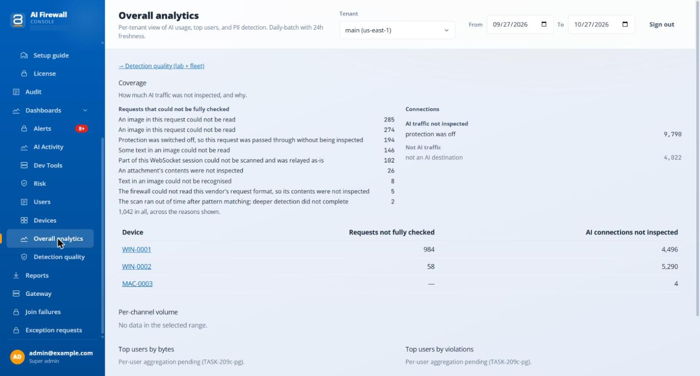
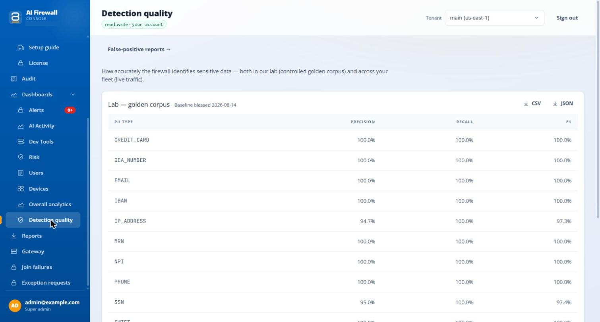
The pictures show a test workspace. Host names are examples.
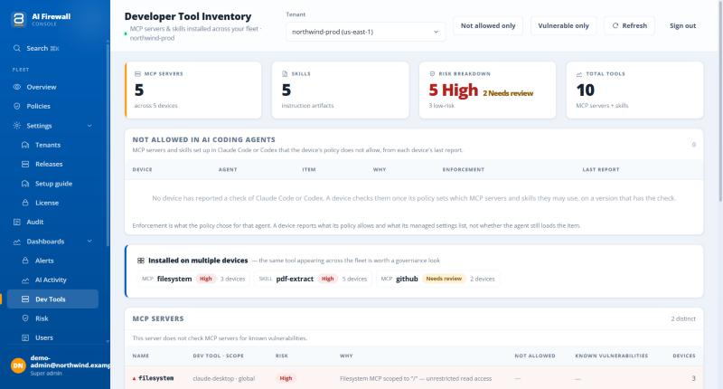
The picture shows the portal's demo with sample data.
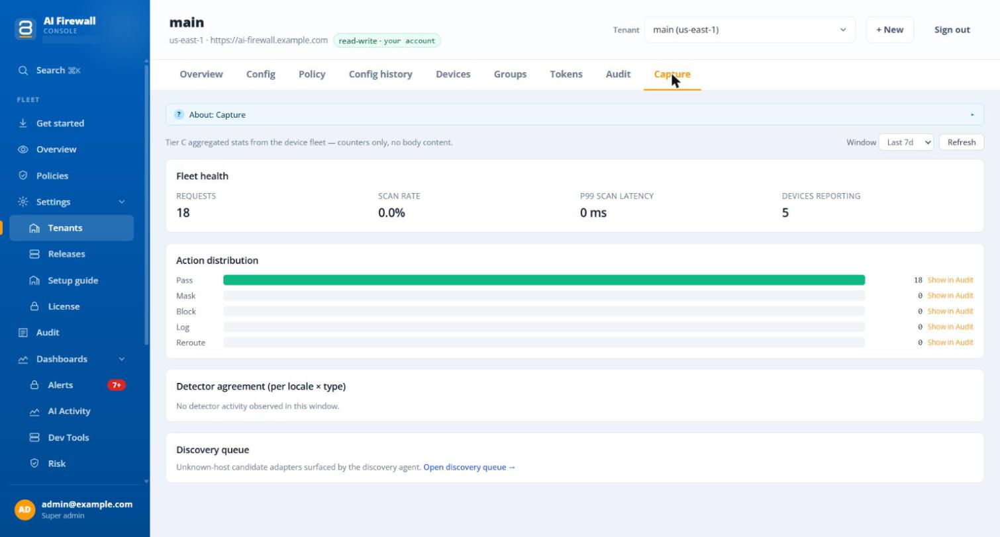
The picture shows a test workspace. Names, addresses and IDs are examples.
Alerts¶
Dashboards > Alerts lists the computers and people that need attention now, in two sections: Devices and People and AI services. The number on the menu entry adds up the open alerts of up to 25 workspaces, and the hover says how many. An alert clears itself when its cause goes away. You cannot acknowledge or mute it. The portal sends no e-mail for these alerts. An uninstalled or revoked computer raises none.
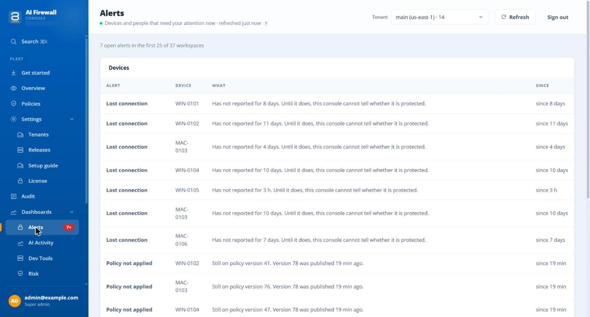
The picture shows a test workspace. Names, addresses and IDs are examples.
The page shows one workspace at a time (list Tenant, with the number of open alerts after each name), while the menu number counts all. Why these rules? lists the thresholds. They are the same for every workspace.
| Alert | Raised when |
|---|---|
| Never reported, Lost connection | A computer has not reported for 1 hour |
| Protection stopped, Not inspecting AI traffic | Protection or inspection has been down for 10 minutes |
| Out of date | An old version for 7 days. Judged against the feed of another product. On a server with no feed it reads "not checked" |
| Policy not applied | The computer runs another settings version for 15 minutes |
| Repeated blocked requests | 10 blocks in 15 minutes |
| Secret blocked | A secret was blocked |
| Personal data in uploads | 3 uploads with personal data in an hour |
| New AI service | A host not seen in the last 30 days |
| Browser going around the firewall, Proxy setting replaced | A browser skipped protection, or the proxy setting was changed |
| No AI traffic while on VPN | 2 hours with a VPN up and no AI traffic |
A Not checked block says what could not be judged: no update feed, old agents that do not report, less than 30 days of history, or more data than the page reads (5000 security events, 2000 hosts). A half-loaded page never reads as "all clear". Alerts about people are worked out from audit rows and so depend on who the audit record names.
The health of the server itself (database, disk, audit intake, backups, services) is a different thing. Servers set up with a current aifw can e-mail those alerts to the administrator address given at setup, if the server has mail settings. See Operate and upgrade.
Reports, Risk and Users¶
Reports has five reports: Executive summary, Data protection (DLP), AI tool usage (shadow AI), User risk and Compliance & audit trail. Each has Export CSV and Print / PDF. Risk and Users have their own pages.
A report page has three lists at the top: the report, the workspace (Tenant) and the window (for example Last 30 days). The Executive summary shows the number of computers, the active users, the requests blocked and masked, a chart of requests per day, and how the requests were handled. A workspace with no traffic in the window says "No activity in this window yet".
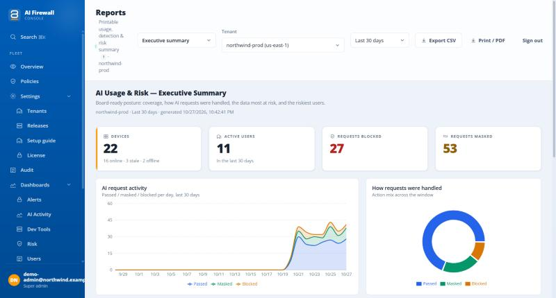
The picture shows the portal's demo with sample data.
All three use only the newest 500 events of the workspace, with no warning on the page. A 90-day report on a busy workspace covers a small part of it. The audit-trail report is not the chain: it is the same 500 rows. Risk is not a score out of 100: 5 for each block, 2 for each mask and 0.5 for each log. Use Audit with filters when you need the whole picture.
Risk shows four counters (Active users, Elevated activity, Requests blocked, Requests masked), a chart of passed, masked and blocked requests per day, the most frequent kinds of data, and two lists: the riskiest users by enforcement activity and the riskiest devices by behaviour score. A Window list sets how far back it looks. Devices appear in the second list only when their agents report a behaviour score. Users shows the activity of each person in the window, with the top service, the top kinds of data, the mix of actions and the number of computers, and the buttons CSV and JSON. When audit records do not name people, the user is shown as "(unknown)".
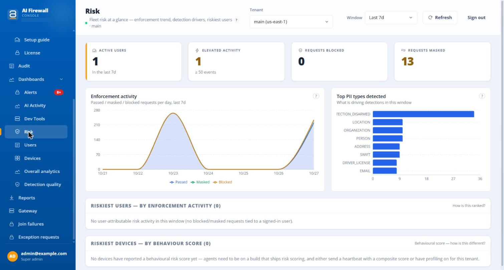
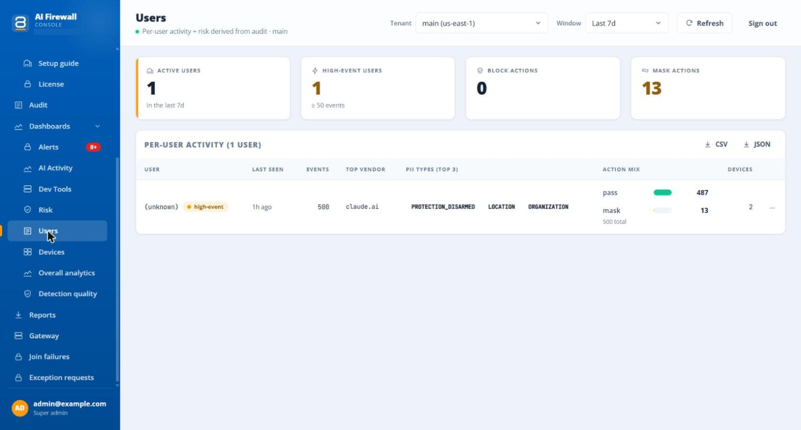
The pictures show a test workspace.
Exception requests¶
Exception requests in the menu lists requests for an exception to a blocked or masked message, with the kinds of data and the AI service. Pick the workspace in Tenant.
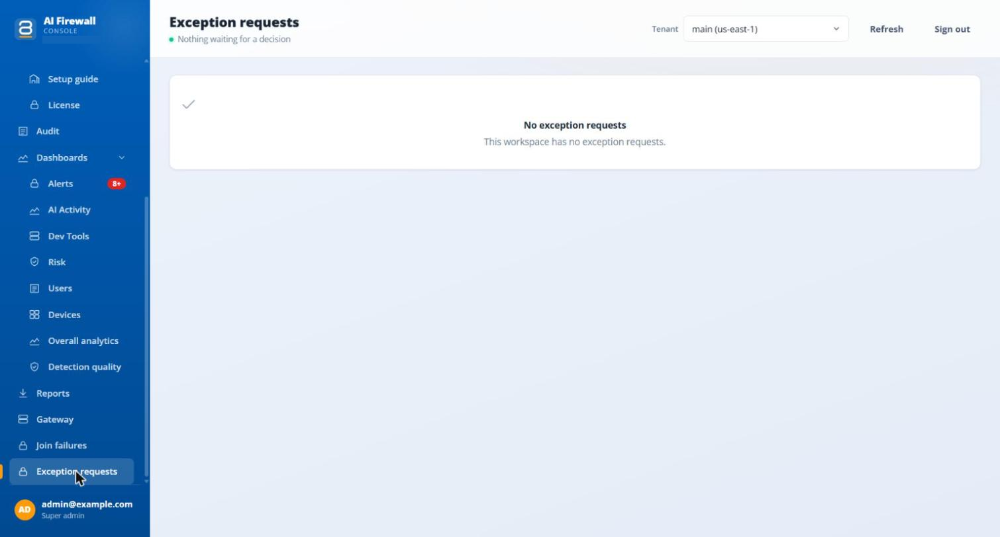
- The columns are Requested, Device, What was found (the kinds of data by name), AI service, What happened (Blocked, Held or Masked) and Decision. A waiting request has the buttons Approve and Reject. A decided one reads "Approved by <who> · <when>" or "Rejected by <who> · <when>".
- The page never shows the text of the prompt, only the kinds of data.
- The page says: "Approving or rejecting records your answer and who gave it. It does not change anything on the employee's device: nothing is unblocked or sent again." The pause described below is the one exception.
- An
adminof the workspace or asuper-admincan decide. For anyone else the page says "This sign-in can see these requests but cannot decide them." If someone else decided first, the page says "Already decided by someone else. The list has been refreshed to show their answer." The decision goes into the admin log asexception.request.decided.
The page is expected to stay empty for now
The page and the server routes exist, and the system service can relay a request to the workspace, but no app sends exception requests yet. No screen on the computer asks the employee to request an exception. Do not tell employees that they can ask for one.
The console cannot give an approval a length: the page has no field for it. Through the API, the server accepts a pause of 1 to 43200 minutes when a request is approved, and puts an end time for that one AI service into the computer's configuration. A computer that reads it sends requests to that service as typed until the pause ends, but still inspects and records them. A block on access and a block on uploads stay in force. Without a pause, an approval changes nothing on the computer.
What administrators changed¶
Settings > Tenants > workspace > Audit is the log of changes that administrators of the workspace made: When, Actor, Action, Target and Details.
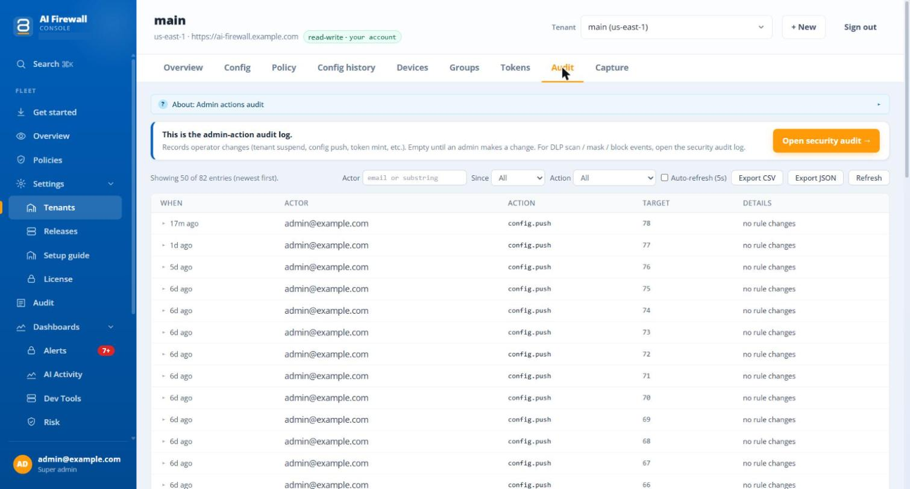
The picture shows a test workspace. Names, addresses and IDs are examples.
- Actions include
config.push,config.rollback,tenant.provision,tenant.suspend,tenant.unsuspend,token.mint,token.revoke,device.revoke,device.delete,user.createanduser.disable. The server also records converting a workspace, setting an override, changing groups, publishing policies (fleet.policy_v2.publish), exception decisions and changes to user groups (fleet.user_group.*). These appear when you do not filter by action. - Filters: actor, time (hour, 24 hours, 7 days, 30 days, all), action.
- Export CSV and Export JSON give all matching rows, up to 2000. The page warns you when it is capped.
- A
super-adminalso has a platform-wide log.
The portal states no retention for this log, and the code does not delete from it.
Using the audit trail as evidence¶
- The chain shows that events were not changed after they reached this server. It is not a timestamp from an independent party unless you set one up.
- The audit shows the types of data and the text with values replaced, never the values. Names and numbers that no detector found stay readable in the preview.
- Write down the date range and the filters when you export or take a screenshot for an auditor, and remember that Reports, Risk and Users are samples.